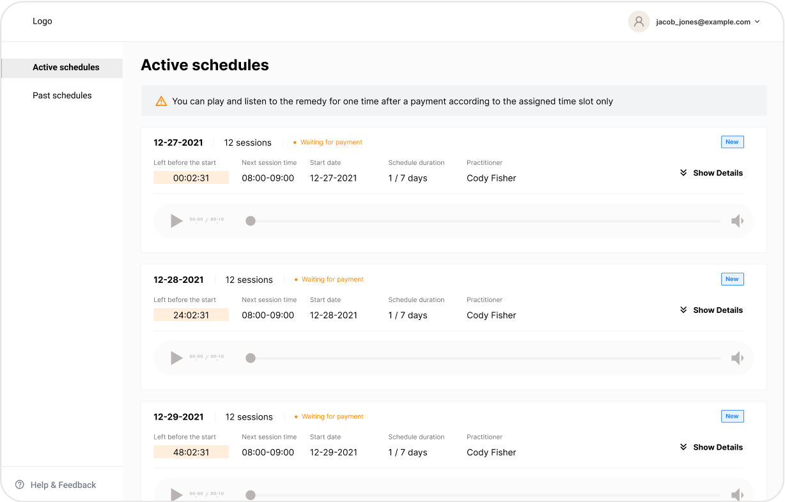
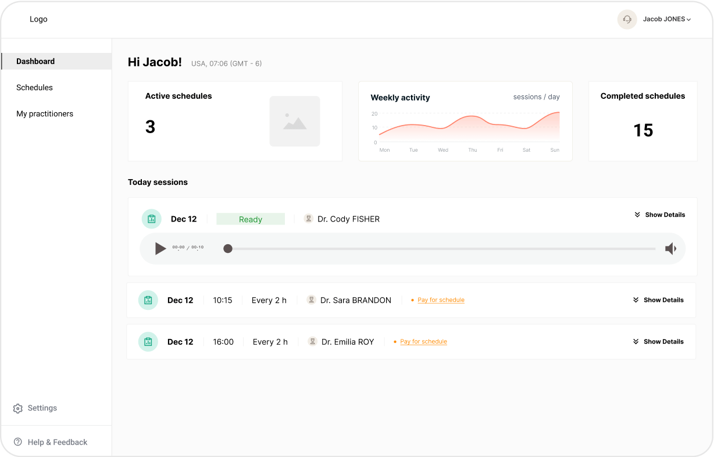
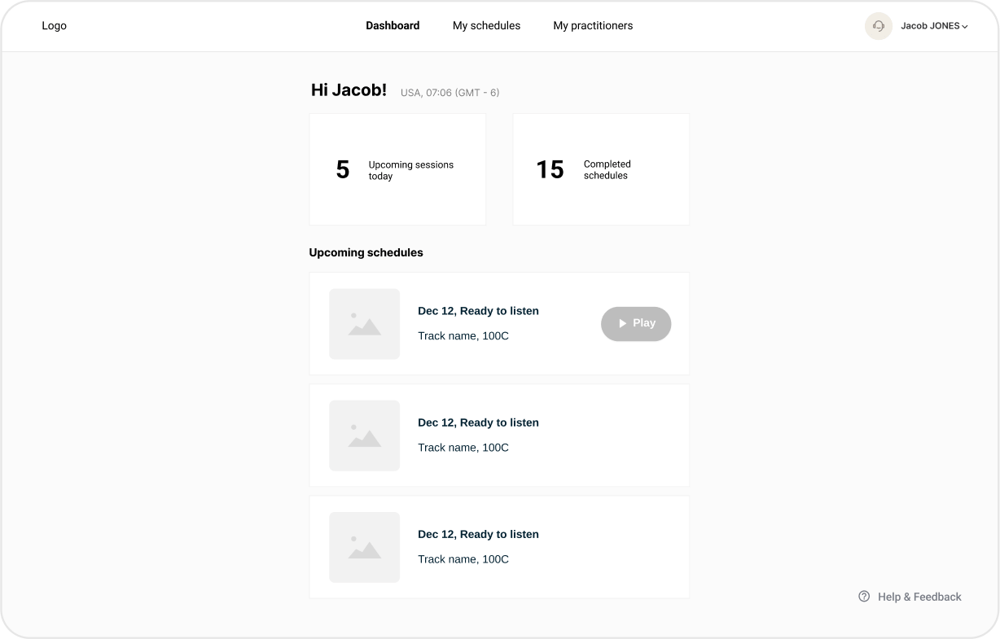

Описание
InnoVibe разработала уникальный процесс преобразования информации о носителях средств (эссенции, соли и т. д.) в гомеопатические частотные треки, которые передаются с помощью звука.
Платформа включает обширную базу данных профессионально управляемых гомеопатических препаратов, предоставляя практикам по всему миру инструменты для проведения терапевтических сеансов и эффективного мониторинга прогресса.
Ссылка
https://viahomeopatica.ru/
Проблема
-
Единая база треков: Практики сталкивались с трудностями из-за отсутствия единой базы треков, что усложняло предоставление качественного лечения.
-
Разрозненность информации: Необходимые для работы данные были разбросаны по разным программам, что приводило к неэффективности и ошибкам.
-
Отсутствие клиентских сервисов: Клиенты не имели специального сервиса для прослушивания треков и отслеживания прогресса.
Исследования
Как продуктовый дизайнер, я погрузилась в бизнес-процессы гомеопатических практиков. Это включало изучение всего рабочего процесса, начиная с создания базы данных треков и взаимодействия между практиками и клиентами, и заканчивая анализом результатов лечения.
Определение пользователей
После проведения исследований и ряда интервью с практиками были выделены следующие группы пользователей:
-
Практики
-
Клиенты
-
Системные администраторы (администраторы и менеджеры клиентов)
Потребности пользователей
Была собрана подробная информация о потребностях, предпочтениях и проблемах практиков, клиентов и системных администраторов через интервью и опросы. Это позволило глубоко понять их требования и использовать эти данные для разработки платформы.

Пользовательские сценарии
Я возглавила создание пользовательских сценариев, разрабатывая различные пути и взаимодействия, которые практики, клиенты и системные администраторы будут использовать в приложении.
Целью было убедиться, что приложение охватывает все потребности пользователей и сценарии, начиная с первичного онбординга и до повседневного использования и управления системой.

Варфреймы и прототипы
Пользовательские сценарии были преобразованы в варфреймы и прототипы, которые визуализировали интерфейс и взаимодействия приложения. Цель заключалась в поэтапной доработке дизайна на основе обратной связи от пользователей и тестировании удобства использования приложения.
Итерация 1
Итерация 2

Итерация 3
Итерация 4
Брендинг
Цветовая палитра
Эта палитра была разработана для создания комфортной рабочей атмосферы для врачей и системных администраторов, одновременно обеспечивая спокойный и доверительный опыт для пациентов.
Логотип
Логотип сочетает плавные, гибкие формы с мягкими цветами и градиентами. Используемый шрифт добавляет уверенности благодаря своему традиционному, но современному виду, а сложная геометрия отражает как технологии, так и медицину.
Графические элементы
Графические элементы разработаны с плавными и гибкими формами, напоминающими течения и ритмы звуковых волн. Такой подход улучшает общий визуальный стиль, создавая гармоничный и динамичный пользовательский опыт.
Дизайн-система
Дизайн-система важна при запуске крупного проекта с нуля. Она помогает сохранить единый стиль, сэкономить время и упростить совместную работу.
Я создала нашу Дизайн-систему, что позволило нам поддерживать консистентность и работать эффективно.

Платформа для практиков
Расписание
Практики являются основными пользователями нашей платформы. Она разработана для того, чтобы помочь им быстро и легко планировать процедуры.
Есть специальный раздел, который отображает важную информацию о каждом расписании. Практики могут развернуть карточки, чтобы просмотреть все детали, что гарантирует наличие всей необходимой информации под рукой.
Клиенты
Практики теперь могут более эффективно управлять своими клиентами.
Возможность доступа к подробной информации о клиентах и истории расписания в одном месте улучшает эффективность и удобство использования.
Платформа для клиентов
Мы разработали особую структуру для клиентов, исходя из их основной потребности: прослушивания треков.
Эта структура позволяет клиентам легко получать доступ к своим трекам, навигировать по ним и прослушивать их, обеспечивая более плавный и интуитивно понятный опыт.


Платформа для системных администраторов
Платформа позволяет администраторам создавать и управлять обширной базой данных треков, обеспечивая бесперебойную работу и легкий доступ к информации.
Системные администраторы могут легко контролировать и организовывать работу как с клиентами, так и с практиками.

Адаптивность — обязательное условие
Адаптивность приложения позволяет практикам быстро и легко назначать расписания клиентам, тем самым обеспечивая клиентов возможностью получать и следовать своему лечению эффективно, независимо от их местоположения.

Результаты
-
Платформа для клиентов: Создали удобную платформу для клиентов, позволяющую легко управлять и отслеживать треки, что повысило вовлеченность и удовлетворенность клиентов.
-
Платформа для практиков: Интегрировали данные в единую платформу, чтобы повысить эффективность и снизить количество ошибок в рабочем процессе практиков.
-
Единая база данных: Мы разработали централизованную базу данных, которая объединяет все треки лечения, упрощая доступ и управление.